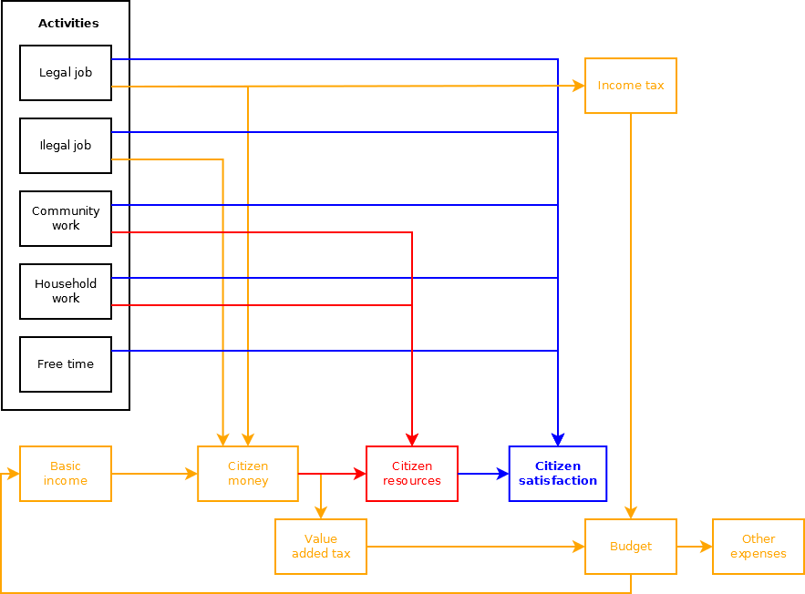

How does the simulation work
Overview
Generally speaking, each citizen divides its (fixed) amount of time between various activities in such a way that he is most happy (gains most
satisfaction). Sounds simple, doesn't it?
The workings of the simulation are shown on the following diagram that I will refer to during explanation:

Currencies
The simulation works with three kinds of "currencies":
- Money: Just the money. Shown in orange in the diagram.
- Resources: Resources needed for living. Food, warmth, housing or more elaborate like art. Simulation currently does not differentate
types of resources - everything is just "a resource". Shown in red in the diagram.
- Satisfaction: Citizen's (un)happyness. Everyone wants to be happy! Shown in blue.
Activities
Activities that citizen can take part in are:
- Legal job: Citizens go to work, get money, some satisfaction (or dissatisfaction, if they don't like to work). Oh, and the money they
make in legal job gets taxed by income tax!
- Illegal job: Citizens work, but not "officially". So they get money for the work but the money are not taxed. Since it is illegal and
they are afraid they will be caught, illegal work generates much more dissatisfaction than legal work.
- Community work: Citizens do what they can for their neighbours and their neighbours do the same for them. Upside is that citizen gets
directly resources (simulating neighbours returning the favor), so this kind of work is not taxed at all. Downside is that it is less effective and
effectivity drops quickly since community is limited. Also generates some (dis)satisfaction.
- Household work: Citizens working on their own household. Cleaning, doing some repairs, cooking and so on. Completely tax-free, but
there is only limited amount of things you can do on your own, so effectivity drops quickly. Also generates some (dis)satisfaction.
- Free time: Free, non-productive time. Generates just satisfaction.
Converting money and resources to satisfaction
So by activities, citizens generated some amount of money, resources (and satisfaction). Now we need to convert money and resources to satisfaction:
- With money citizens buy resources. They need to pay Value Added Tax for the resources (*).
- Each citizen has a "living standard" i.e., amount of resources he is used to. The amount of generated and bought resources is compared to this "living
standard" and (dis)satisfaction is generated based on the difference. Also when amount of resources is low so that it does not cover basic needs (food,
housing, ...), it generates additional dissatisfaction.
*) So when money are acquired from legal job, they are taxed with income tax and then again with VAT when used to buy resources. When money are acquired from
illegal job, they are taxed with just VAT when used to buy resources.
Budget
You should have a balanced budget. It is quite simple. The incomes are:
- Income tax
- Value added tax
Your expenses are:
- "Other" expenses for running the state, specified "per capita" by constant in the simulation.
- Basic income
Running the simulation
Important note: All hours, production and money are scaled to weekly values. So when you see "Legal
job avg hours", it is per week. When you set "Base income", it is per week. Et cetera!!!
When you start the simulation, following happens:
- Citizen population is randomly generated, each citizen has slightly different properties (effectivity at work, how much he/she likes work, etc.)
- Basic income is set to zero, taxes are set to initial values.
- Citizens find optimal allocation of their time to various activities so they get most satisfaction out of it.
Now the simulation round begins
- You have a chance to change simulation parameters - basic income and taxes. You see impacts on your budget as soon as you change the value.
- When you are done, click the Next step button.
- Citizens will find optimal allocation of their time for new conditions.
- Next round begins.
TODO
There are several enhancements that are currently on my mind:
- Inflation: Citizens should be able to buy only as much resources as are generated by dependent and independent jobs.
- Different resources: It is, of course, not possible to simulate every type of resource. So I would go only with two types. "Type 1"
resource that is more effectively produced in job than in standalone work but is crucial for survival. For example, food. "Type 2" resource, that is
can be very effective to produce, even when working alone, but is not essential for living, for example, art.
- Dependent citizens: Citizens that are not able to produce enough resources on its own and need to be supported - children or seniors.
Social benefit would be introduced, that would be given to those citizens at the start and you could replace that with basic income.
- Working habits: When citizens do not work, they gradually lose their working habits meaning they will get more dissatisfaction from
work when they consider working again. And vice versa, when they are working, they get used to it and get less dissatisfaction.
- Aging: People get less effective, old people die, new citizens "appear" which do no have working habits (get more dissatisfaction from
work - see above).
Internals - density functions
UI features "Designer" part where you can see different functions that are behind the simulation. Each function has a description so I will not cover them
here. I just want to emphase, that except the last two ("Resources difference satisfaction" and "Resources absolute satisfaction") they are constructed as a
density functions. So, for example, to determine how much satisfaction you get from working 40 hours a week, you need to sum all values from 1 to 40.